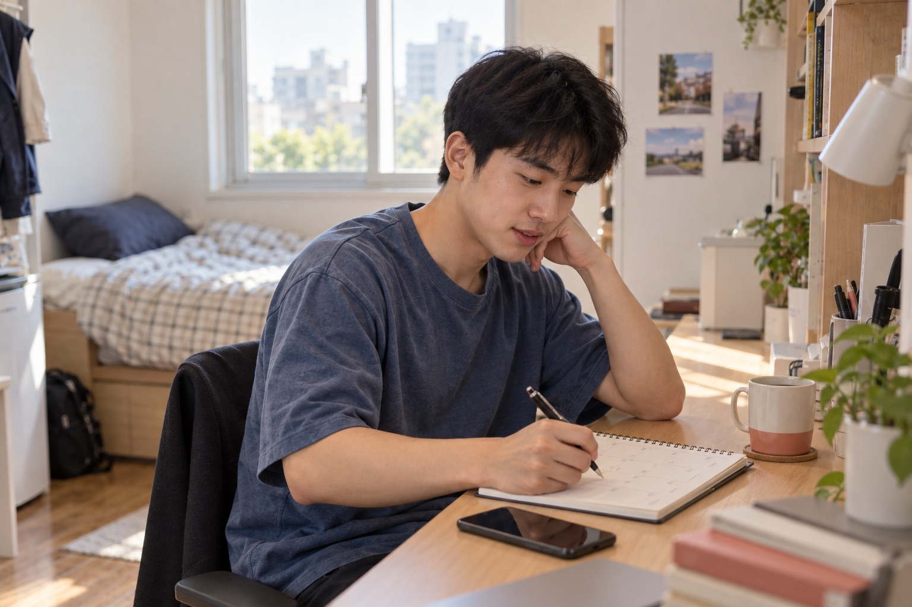
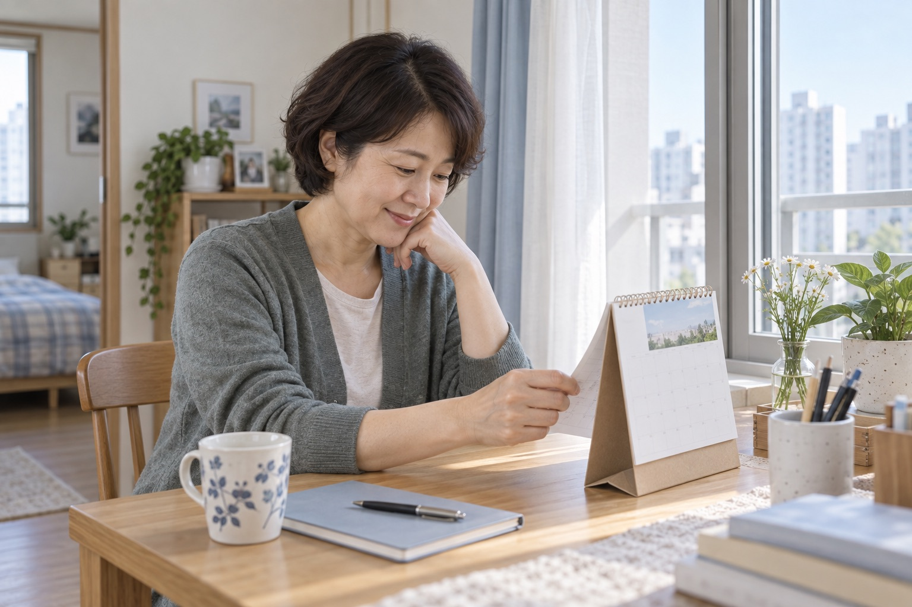
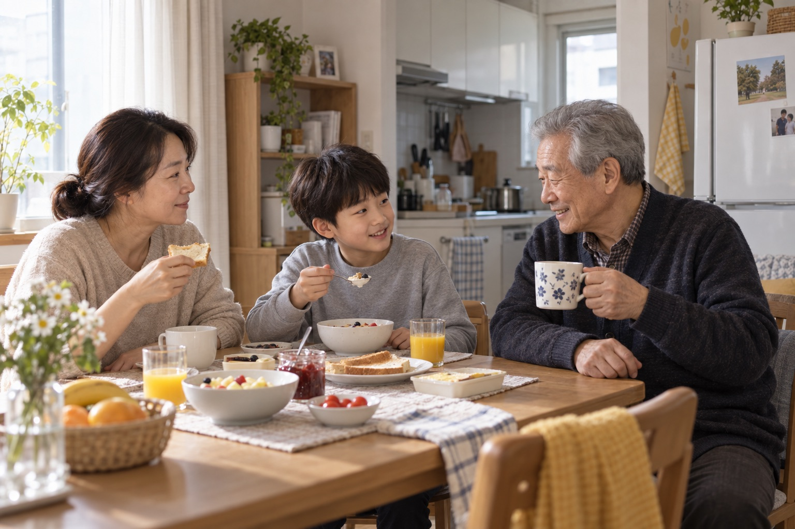

잔잔한 온기
사람 중심의 편집 · 나눔휴먼
HTML 보기 ↗A4 가로 PDF ↗각 7페이지 · 컨셉 / 다섯 타깃 / 살핌·발견·준비·지원 / 핵심과 특장점
기존 캐릭터를 보존하고 컨셉별 새 생활 장면을 더했습니다.

사람 중심의 편집 · 나눔휴먼
HTML 보기 ↗A4 가로 PDF ↗
정보의 정렬 · Pretendard
HTML 보기 ↗A4 가로 PDF ↗
생활의 리듬 · Wanted Sans
HTML 보기 ↗A4 가로 PDF ↗사진은 AI 생성 가상 인물입니다. 실제 기능·고객 사례가 아닌 디자인 시안입니다.